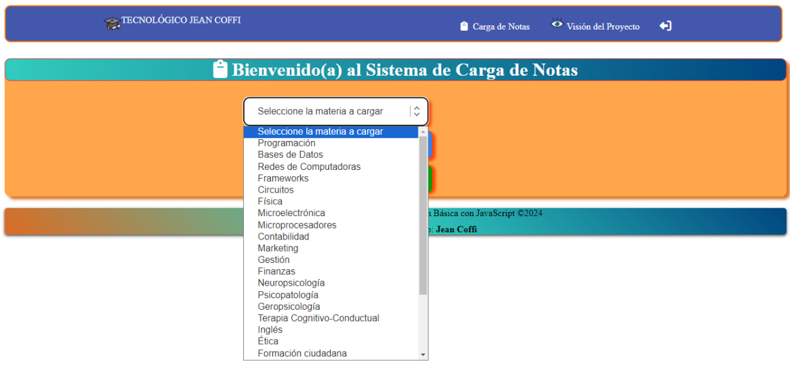
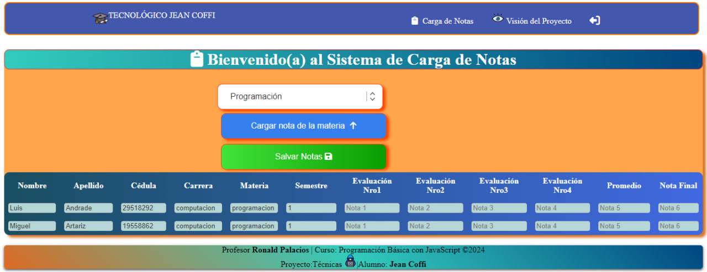
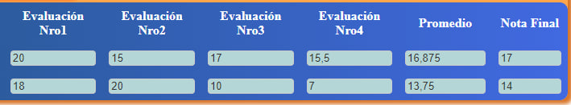

SISTEMA DE CARGA DE NOTAS DEL TECNOLÓGICO JEAN COFFI
Este sistema está diseñado para la carga de notas por parte de los profesores que imparten clases a los alumnos de un hipotético instituto tecnológico, en el cual ofrecen cuatro (04) carreras universitarias, cada una de las cuales consta de cuatro (04) semestre donde se dictan tres (03) materias.
Para poder realizar la carga de las notas, los profesores deben registrarse en el sistema, incluyendo el nombre de usuario, nombre, apellido, teléfono, correo electrónico y la contraseña.
Una vez registrado en el sistema, el profesor puede acceder al mismo iniciando la sesión, para ello se solicita el nombre de usuario y la contraseña.
Cuando el profesor haya iniciado una sesión, podrá escoger la materia a la cual cargará las notas. El sistema mostrará el listado de todas las materias que se imparten en la institución.

Cuando es elegida la materia aparecerá la información de los alumnos, específicamente Nombre, Apellido, Cédula de identidad, Carrera, Materia y Semestre, además de cuatro campos correspondiente a las notas a cargar de las evaluaciones realizadas, y dos campos complementarios donde se indica, una vez guardada las notas, la nota promedio y nota final de cada estudiante. Esta última no es más que la nota promedio redondeada.

Las notas a cargar van de 0 a 20, el sistema acepta decimales, siendo la nota promedio el acumulado de notas entre 4 (número de evaluaciones) y la nota final se corresponde al redondeo de la nota promedio.

Limitaciones:
- El sistema no valida el hecho de que una vez que un profesor se registra por primera para una materia, no pueda volver a hacerlo en dicha materia.